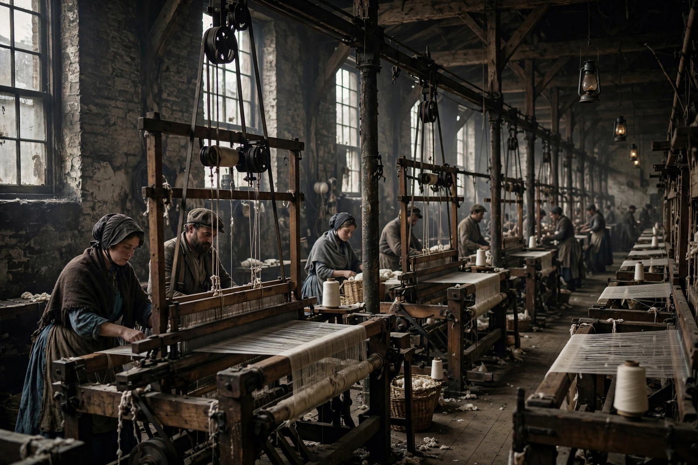

| Exploitation of labour | |
|---|---|
 Mill workers in the Industrial Revolution | |
| Key theorists | Karl Marx, John Roemer, G. A. Cohen |
| Related concepts | Surplus value, alienation, wage labour |
Exploitation of labour (or labor) is a concept in political economy and moral philosophy referring to the unjust treatment of workers. In its best-known form, developed by Karl Marx, it denotes the extraction of surplus value: workers produce more value than they receive in wages, and the difference is appropriated by the owners of the means of production as profit.
Building on the labour theory of value, Marx argued in Capital (1867) that the working day divides into necessary labour time, which reproduces the value of the worker's wages, and surplus labour time, whose product the capitalist appropriates without equivalent payment. The rate of exploitation is the ratio of surplus to necessary labour. Marx held that this extraction is built into the wage relation itself, even when wages are "fair" by market standards, because workers, lacking their own means of production, must sell their labour power to live.
Later thinkers widened or revised the concept. John Roemer modelled exploitation as arising from unequal distribution of productive assets rather than the labour market alone. Liberal and neoclassical critics argue that wages reflect marginal productivity and voluntary exchange, while others define exploitation more broadly as taking unfair advantage of vulnerability — for instance in sweatshops, migrant labour, unpaid internships and gig work. Modern labour law, minimum wages, and trade unionism are often understood as institutional responses to labour exploitation. The debate connects closely with discussions of alienation and with historical struggles such as those following the Peterloo Massacre.